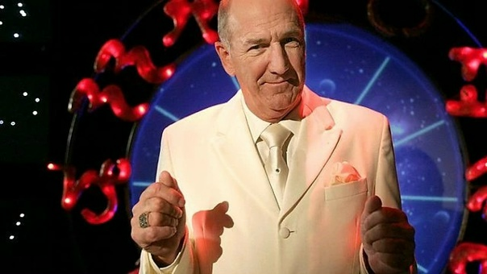

Эра Десятого Доктора
<<< НАЗАД ||| 5-6. Секреты звёзд ||| ДАЛЬШЕ >>>
MVO ВГТРК, или Original [ENG]
Субтитры: отсутствуют

Secrets Of The Stars
Дата выхода: 20-27 октября 2008
Формат: 2 эпизода по 30 мин.
| Варианты озвучек: | * Разные: смотрите по инструкции |
|---|---|
| Скачивание и просмотр: |
Астролог, зарабатывающий на фальшивых предсказаниях, не представляет, что связался с древнейшей силой Вселенной… Сара Джейн не верит в астрологию, однако она верит, что Мартин Трумен использует инопланетные методы. Люди вокруг неё попадают под влияние Трумена, и даже Мистер Смит не может разобраться, что происходит.

